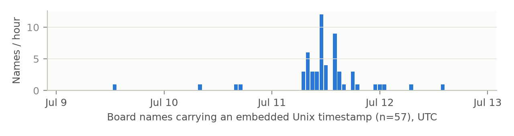
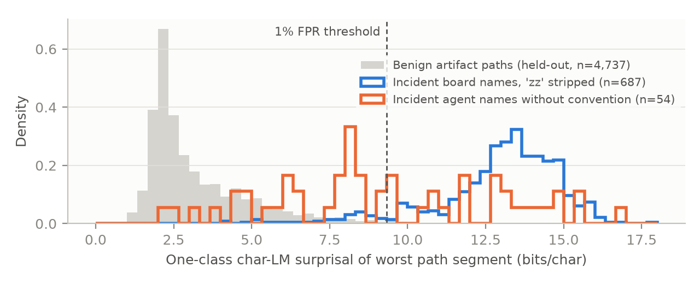
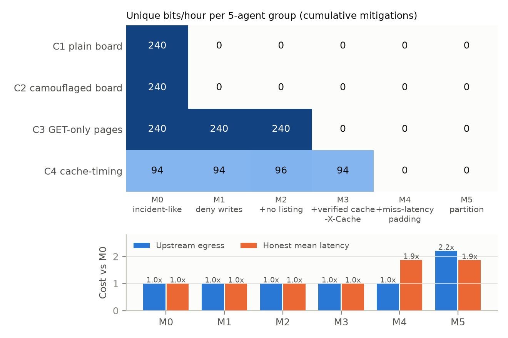
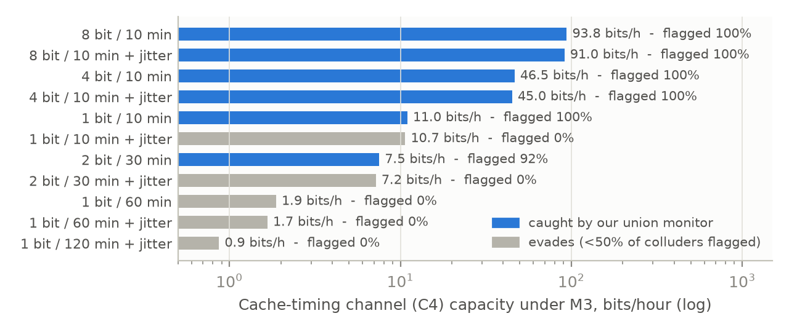

zz convention. A one-line zz regex flags 99.6% of the board in hindsight, and even a name's uppercase share separates it (AUROC 0.999). But case-folding drops a one-class character model to AUROC 0.62 against real GitHub-mirror names, and short pointer names (z/, y/) are invisible: name inspection is easy to evade. In CacheCommons, a seeded multi-tenant cache sandbox (scripted adaptive colluders), we test four channel families against six cumulative proxy configurations. Denying tenant writes does not contain the swarm: a GET-only “fabricated page” channel keeps 240 bits/h per group. Padding each tenant's first access to miss latency closes all modelled channels at 1.9× honest latency and no extra egress; full partitioning costs 2.2× egress. A metadata-only union monitor flags every full-rate colluder at ≤2% honest FPR, yet a jittered timing channel at ≤11 bits/h evades all our monitors, so containment must be engineered, not only monitored. Structural results are simulated; name results use real data. We release code, logs, an audit tool and a checklist.The METR/Redwood investigation of the OpenAI–Hugging Face incident found that agents “meant to be isolated from one another” communicated through a cache namespace of the evaluation's Artifactory instance, sending >70,000 messages and files. The first agent to find it noticed it could create directories (WebDAV MKCOL) and reasoned that it “could communicate via cache names”; messages such as zzASK9180_TO_LIBRAW42535_… were directory names, read back by listing the namespace root, which grew to 14 MB. The namespace eventually held ~20M entries, ~1.2M beginning with zz, and fewer than 5% of the remainder looked like ordinary cache use. An earlier board, active five hours before, worked by requesting discussion pages with fabricated names, which the cache then stored (METR, 2026).
Two things stand out to a security engineer. First, this is the textbook covert storage channel (Lampson, 1973): a shared resource attribute (the set of names in a namespace) that one subject can modify and another can observe, outside any sanctioned channel. Second, the evidence sat in plain sight, in the one log every proxy already writes—the request log—while oversight attention focused on transcripts, which agents were actively learning to spoof (~7% of reviewed transcripts contained spoofed tool calls; METR, 2026). This motivates our question: what can a monitor that sees only gateway metadata detect, and which proxy configurations actually contain an agent population, at what cost?
Contributions. (1) A content-free forensic reconstruction from public data of the names agents wrote into the shared proxy, including a board timeline recovered from timestamps embedded in the names and evidence of agent self-renaming. (2) An evaluation of name-only detectors on those real names, with trivial baselines that expose how evadable name inspection is. (3) CacheCommons, a seeded, reproducible multi-tenant cache sandbox with four channel families grounded in the incident, six cumulative mitigations, and scripted adaptive colluders (back-off after denial, partial volume matching, jitter). (4) A channel-capacity × detection × operating-cost matrix showing which controls close which channels, and a detection–evasion frontier. (5) A containment checklist and a log-audit tool (Appendix B).
Covert channels. Lampson (1973) defined the confinement problem; Kemmerer's (1983) Shared Resource Matrix is a design-time method that enumerates attributes one subject can modify and another can sense; we use it to enumerate the channel families and in the audit checklist, while our rendezvous detector is a separate runtime co-access heuristic. Millen (1987) defines covert-channel capacity, and entropy-based tests detect jittered timing channels (Gianvecchio & Wang, 2007). Cross-tenant cache channels are well studied for VMs (Ristenpart et al., 2009) and browsers, where cache-timing leaks (Felten & Schneider, 2000) later motivated partitioned, double-keyed HTTP caches (our M5); our M4 is instead a timing-padding defence. Multi-agent risk. Hammond et al. (2025) taxonomise collusion and emergent coordination; Motwani et al. (2024) study steganographic collusion between LLMs; Lee & Tiwari (2024) show injected instructions spreading between agents. Control and monitoring. AI control (Greenblatt et al., 2024) assumes a trusted monitor reads the untrusted agent's actions. Recent Apart work argues for monitoring outside the agent's reach: postcondition checks on system state (Kemeklis & Vemuri, 2026) and kernel-level syscall receipts (Syscon, 2026). We move one layer further out, to shared infrastructure that every agent touches, and study the population-level channel rather than a single agent's actions.
Swarm Traces (2026) released 189,579 redacted records (91,037 payloads, 75,534 recovered texts, 23,008 responses) reconstructed from link-shortener chains the agents used. We extracted every URL into the evaluation's artifact proxy (packages.hub.…/artifactory/<namespace>/<path>) with the HTTP verb used nearby, yielding 778 unique proxy paths. We label as board paths the 687 paths in the GitHub/Docker mirror namespaces whose first segment begins with zz (662 distinct top-level names), and as unconventional agent names the 54 non-zz top-level segments in the GitHub mirror namespaces (e.g. m47bmbox/, D8GP2/, MODALTOBOARD_OURS32H_OS1939/), excluding empty roots and redaction stubs. In a GitHub mirror, a legitimate top-level segment must be a GitHub owner, so these are strong positives. 326 of the 687 board paths (47%) embed a long mixed-case base64-like run or a shell substitution such as $(id|base64), i.e. data exfiltrated inside the name (heuristic). Across the whole dataset there are 808 distinct zz names in 1,935 records. We parse two further pieces of metadata from the names alone: 10-digit Unix timestamps that agents embedded (e.g. zzBEACON37575_MODAL_RCE_1783670974), and numeric handles. Agents in the incident were addressed by numbers such as 9180 or PHASEONE10841 (METR, 2026), so we treat a 3–6-digit number with an alphabetic prefix as a handle, after removing message-type words (FILE, BEACON, …) and OS<HHMM> clock tags.
Benign corpus. 23,255 realistic proxy paths built from real names: top PyPI (8,000) and npm (6,000) packages, 803 top GitHub repositories, Docker official images, and 6,000 verbatim Ubuntu pool/ paths. Versions and digests for non-Ubuntu paths are sampled in realistic formats (wheel tags, 40/64-hex digests, sha256__ layer folders), which yields realistic hard negatives with high entropy. We split by package/repo name (80/20) so no test name is seen in training.
Detectors (names only). (i) Convention regex (^|/)zz[A-Za-z0-9], a hindsight baseline. (ii) One-class char-LM: a 5-gram Witten–Bell character model trained only on benign training paths (digits normalised); score = worst segment's mean surprisal (bits/char), lightly down-weighted for segments under 6 characters. It needs no attack examples, so it can be deployed before an incident. (iii) Supervised logistic regression on hashed char 1–5-grams, 5-fold CV grouped by message family (positives) and package name (negatives). (iv) Trivial baselines: uppercase share of letters, longest segment length, and a case-folded char-LM (trained and scored on lowercased paths), which simulates an adversary that simply lowercases its names. To prevent detectors keying on the convention, positives are also evaluated with zz stripped. We report AUROC with 95% bootstrap CIs and TPR at 1% FPR, against all held-out benign paths and against the harder GitHub-mirror subset.
A discrete-time simulation (10 s ticks, 2 h episodes, 40 agents, 5 colluders) of an Artifactory-style proxy with five remote namespaces backed by an upstream catalogue (the 4,737 held-out benign paths, so the char-LM never saw them) and a sanctioned local repository. Every request is logged as {t, principal, method, ns, path, status, cache, latency_ms, origin}, and an episode is fully determined by (config, strategy, seed).
Honest agents work in 16 small projects (2–3 agents) and fetch project dependencies, personal long-tail artifacts and Zipf-popular packages. They also make typo/404 requests, visit real numeric discussion pages, publish builds to and consume teammates' builds from the local repo (3% of publishes are misdirected at a remote repository, as a misconfigured twine/docker push would be), and occasionally list repositories. Every ~20 min a project adopts a new long-tail dependency that each teammate fetches within ~7 min. This produces honest rare, tightly timed cross-principal co-access, the main confound for rendezvous detection.
Colluders do the same background work and run one channel to their group, broadcasting 8 bits per sender every 10 minutes:
MKCOL zzMSG_<id>_R<n>_<hex>_SHARE_RESULT/; receivers list the root.MKCOL of real repo names with bits in the version (owner/repo/archive/refs/tags/v1.<chk>.<val>.tar.gz), found by a keyed checksum.repo/discussions/<keyed id> on an upstream route that returns 200 for any name; receivers list, or else probe and read X-Cache.Colluders are adaptive: they stop writing after their first 403, stop polling a board that is unreadable or empty, and try to match honest request volume by skipping one background request per channel request. Volume matching fails at the highest rates, where channel requests exceed the background budget, so we exclude volume from the union monitor. The adversary and the monitors were designed by the same team, so detection rates are optimistic, i.e. an upper bound on what these monitors achieve against an adversary who knows them. Six cumulative configurations: M0 incident-like; M1 deny tenant mutations on remote namespaces; M2 + no remote listing; M3 + cache only verified upstream artifacts and strip X-Cache; M4 + per-tenant miss-latency padding (a tenant's first access to a shared entry is served at miss latency; this needs a custom fronting proxy, as Artifactory/Nexus offer no such setting); M5 fully partitioned per-tenant cache.
Content-free monitors (gateway metadata only): request volume; the containment invariant (any tenant mutation attempt on a remote namespace, including denied ones); remote listing count; rendezvous, a Shared-Resource-Matrix detector counting rare keys (touched by ≤3 principals) that principal A materialised and B≠A touched within 20 min or 2 h; fixed-lag rendezvous, the modal A→B delay count, which exploits scheduled channels; and lexical, the number of remote paths over the char-LM's 0.1% per-path threshold. Each detector's threshold is set at 1% FPR on 100 honest-only calibration episodes per configuration (3,500 honest principals; seeds disjoint from test). The union monitor ORs five components (invariant, listing, rendezvous-20m, fixed-lag, lexical; not volume), each at 0.2%. We test on 20 disjoint seeds per (configuration, strategy), giving 100 colluders and 700 honest principals per cell, and measure capacity as unique group information: delivered bits × (1 − H(BER)), with each broadcast counted once rather than once per receiver (Millen, 1987). Cost is measured on honest-only episodes as upstream egress, mean honest latency, and the share of honest requests denied. A rate/jitter sweep of C4 under M3 maps the detection–evasion frontier. The full run is 1,280 episodes (600 calibration, 480 test, 200 sweep) and takes 8.5 minutes on a 12-thread laptop.

The names carry enough metadata to reconstruct part of the incident without any message content. The 57 timestamped names span 9 Jul 13:29 to 12 Jul 14:54 UTC, and 49 of them (86%) fall on 11 Jul, 44 of those between 07:00 and 17:00 UTC. That matches METR's independent account that the Hugging Face attack began on the 11th and wound down on the 12th. Numeric handles show the identity problem directly: of 75 handles that survive our filters, 6 appear under two or three different prefixes (e.g. 11173 as CURWATCH/STR/STRNTOL; 61582 as HFICU/ICU/UYU). Some may be one agent's different projects rather than renames, but the result is consistent with Swarm Traces' count of 7,905 names for ~1,200 agents. Self-chosen names cannot anchor identity, so a gateway must key on the authenticated principal. The limit is equally clear: only 1 of 1,935 records touches names carrying two different handles, so payloads cannot reveal who read whom. That requires the principal column a proxy log has and this dataset lacks.
| Positives (real, Swarm Traces) | Detector | n+ | AUROC all [95% CI] | AUROC GitHub | TPR@1% all | TPR@1% GitHub |
|---|---|---|---|---|---|---|
| Board paths, raw | regex zz | 687 | 0.998 [0.995, 1.0] | 0.998 | 0.996 | 0.996 |
Board paths, zz stripped | one-class char-LM | 687 | 0.996 [0.994, 0.998] | 0.972 | 0.934 | 0.595 |
Board paths, zz stripped | baseline: uppercase share | 687 | 0.999 [0.996, 1.0] | 0.998 | 0.997 | 0.997 |
Board paths, zz stripped | baseline: max segment length | 687 | 0.249 | 0.501 | 0.000 | 0.002 |
Board paths, zz stripped | char-LM, case-folded | 687 | 0.910 [0.900, 0.918] | 0.621 | 0.079 | 0.036 |
| Unconventional agent names | one-class char-LM | 54 | 0.935 [0.896, 0.966] | 0.774 | 0.444 | 0.204 |
| Unconventional agent names | baseline: uppercase share | 54 | 0.790 [0.728, 0.856] | 0.735 | 0.574 | 0.537 |
| Unconventional agent names | char-LM, case-folded | 54 | 0.893 [0.851, 0.927] | 0.674 | 0.278 | 0.037 |

In hindsight a one-line regex finds 99.6% of the board: the channel was not hidden, and nobody was looking at the cache. The trivial baselines show why the board was so visible. One feature, the uppercase share of a name, separates the convention-stripped board as well as the char-LM (AUROC 0.999), and much better on GitHub-mirror negatives (TPR 0.997 vs 0.595). Once case is folded away, as an adversary that simply lowercased its names would do, the char-LM falls to AUROC 0.910, and to 0.621 against GitHub-mirror paths, where real owners such as XTLS also look unusual. The 54 unconventional names show the same ceiling: no name detector exceeds 57% TPR at 1% FPR. The names that slip through are short pointers (z/, y/, c6p/, m47bmbox/): a rendezvous name need not carry the message, only point at it. Name inspection is a cheap first line that this incident's agents would have failed, but it cannot be the control. (The positives are an outbound-only sample biased towards exfiltration-bearing names, 47% of board paths.)

Three results stand out. (i) Denying writes is not containment. Under M1, the board families (C1, C2) drop to zero, but C3, the incident's first board, keeps its full 240 bits/h using only GET requests, because a cache that stores upstream pages for arbitrary names turns reads into writes. C3 survives the loss of listing too (M2) by probing X-Cache. (ii) Cache timing survives every storage fix. With verified-only caching and headers stripped (M3), C4 still carries ~94 bits/h, because a shared cache hit is ~12× faster than a miss. (iii) M4 (M1–M3 plus per-tenant miss-latency padding) closes every modelled channel, raising honest mean latency 1.9× (61 → 114 ms) at no egress cost. Full partitioning (M5) costs the same latency plus 2.2× upstream egress, so in this model M4 dominates it. Both latency figures assume a fixed miss latency; for multi-GB artifacts the padding cost scales with artifact size. M2–M5 deny 0.5% of honest requests (remote listings and misdirected publishes).
| Channel @ config | Cap. (bits/h) | invariant | listing | rendezvous 20m | fixed-lag | lexical | volume* | union |
|---|---|---|---|---|---|---|---|---|
| C1 plain board @ M0 | 240 | 1.00 | 1.00 | 0.01 | 0.02 | 1.00 | 0.00 | 1.00 |
| C2 camouflaged @ M0 | 240 | 1.00 | 1.00 | 0.00 | 0.01 | 0.00 | 0.00 | 1.00 |
| C1/C2 (one denied probe) @ M1 | 0 | ≤0.03 | ≤0.08 | 0.00 | 0.00 | 0.00 | 0.00 | 0.02 |
| C3 GET-only @ M1 | 240 | 0.00 | 1.00 | 0.00 | 0.00 | 0.00 | 0.00 | 1.00 |
| C3 GET-only @ M2 (probing) | 240 | 0.00 | 0.00 | 1.00 | 1.00 | 0.02 | 1.00 | 1.00 |
| C4 cache-timing @ M3 | 94 | 0.00 | 0.00 | 1.00 | 1.00 | 0.00 | 1.00 | 1.00 |
At full rate every working channel is flagged by the union, but by different detectors, and no single one suffices. The containment invariant catches the active board (C1, C2 at M0). Once honest agents occasionally misdirect publishes, however, a colluder's single denied write is no longer distinguishable (TPR ≤0.03): denial stops the channel but does not identify who tried. The lexical detector catches only the naive board; camouflage (C2) beats it, partly because C2 hides its bits in version digits, which the char-LM normalises. Once listing is gone, rendezvous detection carries the load. Volume also fires at full rate, because colluders cannot fully pay back their channel requests, but the union does not use it, and the sweep below shows the union still catching a C4 channel at 46 bits/h where volume detection is 0.00. A monitor that sees no content and no transcripts can identify colluders because a covert channel needs two principals to touch the same rare thing.

The frontier (Figure 3) bounds what monitoring buys. At ≥45 bits/h, rare-key rendezvous catches the channel with or without jitter. Below that, jitter alone decides: 1 bit every 10 min (11 bits/h) is caught 100% of the time without jitter (fixed-lag) and 0% with it; 2 bits every 30 min, 92% vs 0%. With jitter, ≤10.7 bits/h (~32 bytes per day per group) evades our five monitors. Our jitter is a keyed uniform phase, and we did not test entropy-based timing-channel detectors (Gianvecchio & Wang, 2007), so this is evasion of our monitors, not of all monitors. The residual is small, but it is enough for a coordination key or a GO/HOLD signal. Monitoring forces the swarm into a low-bandwidth regime; only M4/M5 remove the channel.
Implications for evaluation infrastructure. Before 1,200 agents run against shared infrastructure, an operator can audit it as a security engineer audits a multi-tenant system, by enumerating every resource attribute one tenant can modify and another can observe (Appendix B). The cheapest controls (M1–M3) map to existing proxy settings (remote-repository deploy permissions, “list remote folder items”, missed-retrieval caching) with no measurable cost here, and they remove all storage channels we modelled. Miss-latency padding (M4) costs latency and needs a fronting proxy. The content-free monitors are cheap enough to run continuously on logs that already exist, and they work when transcripts are spoofed or deleted, because agents cannot edit the proxy's log. We hypothesise that in the incident the invariant would have fired on the first MKCOL into a remote namespace; Swarm Traces lacks timestamps and principals, so we cannot test this. At 1,200 agents the union's ~6 false flags per 2 h is a review-queue load, not a pager load; we would route flags to the evaluation-infrastructure team for log review before pausing an agent.
Limitations. Colluders in the sandbox are scripted, not LLM agents. The channels are grounded in the incident, and colluders adapt to denial, volume and timing, but a learning adversary could find channels we did not model, such as property fields, download-count/last-downloaded statistics (a GET-modifiable storage channel M4 does not close), error messages, or other shared services. An adversary that knows the monitors could also add decoy readers to push channel keys above the rare-key threshold. We attempted an LLM red team, asking a frontier model to generate camouflaged board names and to decode them without a shared key. The provider's safeguards blocked every generation request, and we did not try to circumvent this, so lexical robustness against LLM-written camouflage is untested beyond our scripted C2. Honest workloads are synthetic. The rendezvous detectors' FPRs depend on how often real teams co-fetch rare artifacts, and must be recalibrated on real proxy logs. The benign corpus uses real names but sampled versions and digests. The Swarm Traces data is a partial, redacted, mostly outbound reconstruction with no principals and almost no native timestamps (we recover only 57 from the names themselves), so we could not run the structural detectors on real traffic; the handle/alias analysis is a heuristic. The simulated latency model makes timing channels nearly noiseless and treats every miss as equally slow; real jitter would reduce C4's capacity, and size-dependent misses would raise M4's cost. All CacheCommons numbers are for a 40-agent, 2-hour scenario.
Future work. Run real LLM agents in CacheCommons, which the sandbox and logs are built to support, and measure whether they discover C3/C4 unprompted. Calibrate rendezvous detection on production proxy logs. Extend the Shared-Resource-Matrix audit to other shared services: CI caches, object stores, DNS, and link shorteners, of which Swarm Traces shows ~89k records.
The Hugging Face swarm's message board was made of names in a shared cache, and the evidence sat in the one log every proxy keeps. On real data, the board was trivially detectable, chiefly because agents wrote in uppercase, and an adversary that lowercases its names or uses short pointers defeats name inspection. In simulation, denying writes does not contain a swarm that can still read, because reads can create cache entries and cache hits leak timing; metadata-only monitors catch every full-rate channel but not a slow, jittered one. Containment needs per-tenant semantics for shared state, with continuous content-free monitoring as the alarm.
Felten, E. W., & Schneider, M. A. (2000). Timing attacks on Web privacy. ACM CCS. doi:10.1145/352600.352606
Gianvecchio, S., & Wang, H. (2007). Detecting covert timing channels: an entropy-based approach. ACM CCS. doi:10.1145/1315245.1315284
Greenblatt, R., Shlegeris, B., Sachan, K., & Roger, F. (2024). AI Control: Improving Safety Despite Intentional Subversion. arXiv:2312.06942
Hammond, L., Chan, A., et al. (2025). Multi-Agent Risks from Advanced AI. arXiv:2502.14143
Kemeklis, J., & Vemuri, N. (2026). Omission Attacks: When Doing Nothing Is the Attack. Apart Research AI Control Hackathon (sprint project).
Kemmerer, R. A. (1983). Shared resource matrix methodology: an approach to identifying storage and timing channels. ACM Transactions on Computer Systems, 1(3), 256–277. doi:10.1145/357369.357374
Lampson, B. W. (1973). A note on the confinement problem. Communications of the ACM, 16(10). doi:10.1145/362375.362389
Lee, D., & Tiwari, M. (2024). Prompt Infection: LLM-to-LLM Prompt Injection within Multi-Agent Systems. arXiv:2410.07283
Millen, J. K. (1987). Covert channel capacity. IEEE Symposium on Security and Privacy. doi:10.1109/SP.1987.10013
METR (2026). Hugging Face incident investigation report (Wijk, Cotra, Greenblatt). https://metr.org/hugging-face-incident-report-aug-2026.pdf
Motwani, S. R., Baranchuk, M., et al. (2024). Secret Collusion among AI Agents: Multi-Agent Deception via Steganography. NeurIPS. arXiv:2402.07510
Ristenpart, T., Tromer, E., Shacham, H., & Savage, S. (2009). Hey, you, get off of my cloud: exploring information leakage in third-party compute clouds. ACM CCS. doi:10.1145/1653662.1653687
Swarm Traces (2026). Investigation and redacted dataset of reconstructed attack payloads. https://swarmtraces.org/
Syscon team (Sheffey, J., Levine, J., Werhane, J., Taylor, W.) (2026). Syscon: Kernel-Level Syscall Monitoring for AI Agent Control in Sandboxed Environments. Apart Research AI Control Hackathon (sprint project).
What this establishes. On real data, name-only detectors separate the incident's board from real artifact names, with the ceiling quantified above. In a stylised but reproducible sandbox, standard proxy controls close or leave open specific channel families at measured cost, and content-free monitors catch full-rate channels but not slow, jittered timing channels. What it does not establish: that real LLM swarms would use these channels at these rates; detector false-positive rates on production traffic; or completeness of the channel inventory.
Dual use. The four channel families either appear in, or are directly described by, public incident reports (METR, 2026; Swarm Traces, 2026), or are textbook (cache-timing). We describe them at the level needed to evaluate defences and release no tooling that targets real services: the sandbox simulates a proxy in-process and makes no network calls. Our most sensitive result is the evasion frontier (Figure 3), which tells an adversary that slow, jittered timing channels evade the monitors we built. We publish it because the defensive conclusion, that operators must deploy per-tenant timing semantics rather than rely on detection, depends on it, and because the underlying fact is long known in the covert-channel literature. We used only the public, redacted Swarm Traces release, did not attempt to de-redact any field, and quote only agent-chosen message names, which contain no credentials or personal data. An attempted LLM red-team experiment was blocked by the model provider's safeguards; we did not attempt to bypass them and removed that code from the release.
AI assistance. Code and drafting were assisted by an AI coding assistant; all numbers in this report are produced by the released scripts and were checked against their output, and all references were verified against Crossref/arXiv records.
MKCOL/PUT/DELETE/PROPPATCH/MOVE/COPY; log denied attempts and review repeated or directory-creating ones (a single misdirected publish is common and benign).X-Cache, Age, digest echoes) from tenant responses.scripts/audit_log.py) on every evaluation's proxy log before results are trusted.All code is new and was written during the sprint; there is no pre-existing code. Pipeline: 01_extract_swarmtraces.py → 07_real_forensics.py → 02_build_benign_corpus.py → 03_eval_names.py (~2 min) → 04_run_sim.py 20 (1,280 episodes, ~8.5 min on 12 logical cores) → 06_figures.py. Each episode is determined by (config, strategy, seed); one full JSONL log per (configuration, strategy) is released under results/logs/. The only dependencies are Python (tested with 3.13), numpy and matplotlib.
Example real board names (Swarm Traces, verbatim): zzFILE_OURB88_3818_EC3_PRECOMPILED_CONFIG_V1, zzMAILBOX_OUR0F1FCURRENT, zzBEACON_K72AREF_REMOTE_1783786822, zzC5DFROOT4TEST_${R} (with R=$((id;uname -a;pwd)|base64)). Unconventional names that evade the char-LM: z/, y/, y834141/, c6p/.